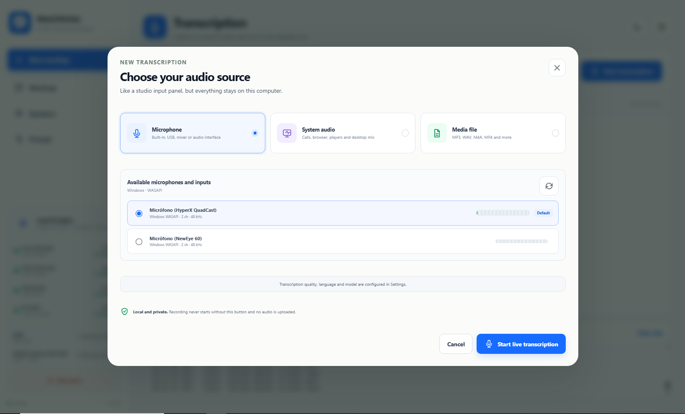
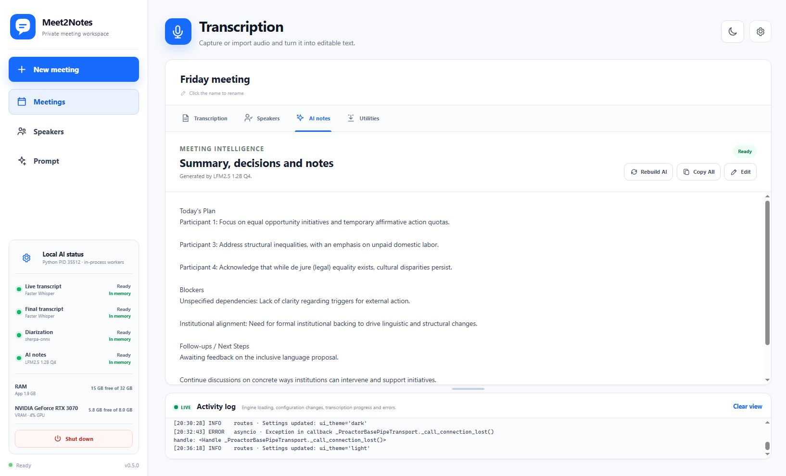
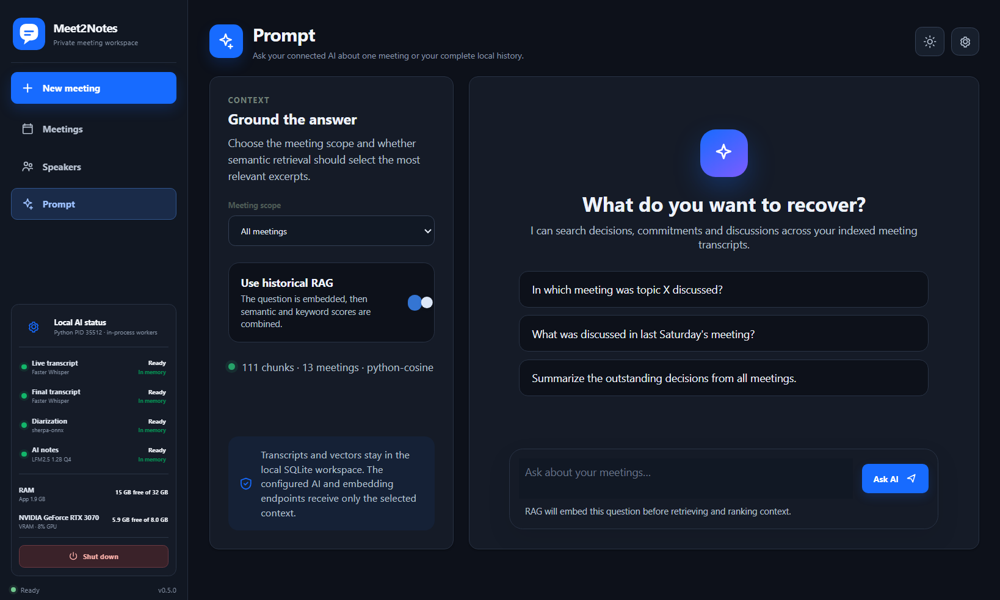
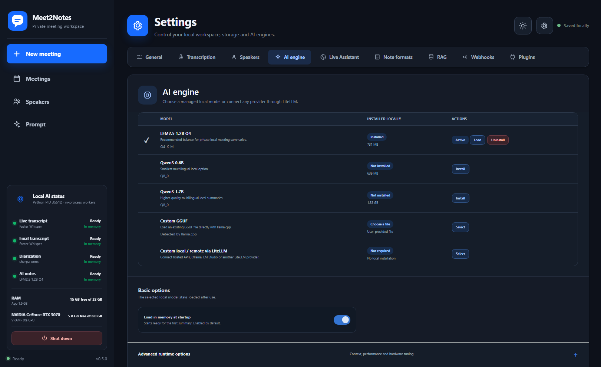
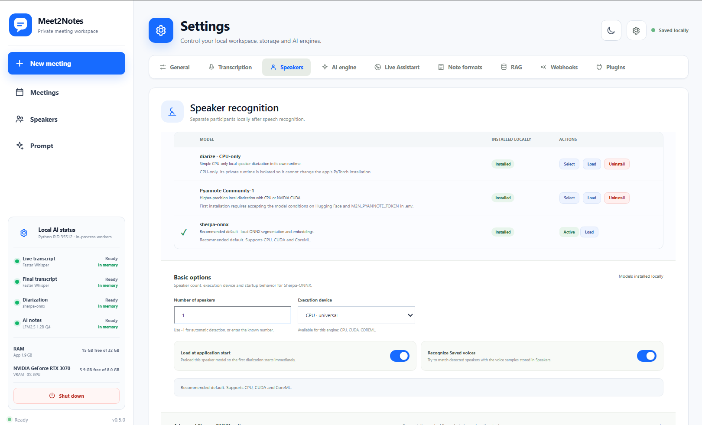
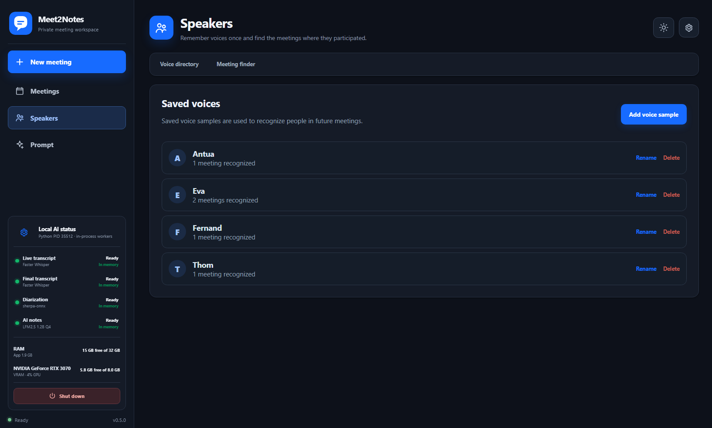

01
Live and final transcription
Follow the conversation in real time, then run a complete quality pass when the meeting ends.
Transcribing locally
Speaker 2 We agreed to review the proposal on Friday.
Record, transcribe, understand and search every conversation with private AI that runs on your own computer.
Let’s make the customer visit the priority for next week.
I’ll confirm the agenda and send it to everyone today.
We should include the latest onboarding feedback.
Built for conversations that matter
Meet2Notes connects the complete meeting lifecycle without handing your recordings to a cloud platform.
Follow the conversation in real time, then run a complete quality pass when the meeting ends.
Speaker 2 We agreed to review the proposal on Friday.
Separate speakers, remember voices and follow each person across the conversation.
Use historical RAG to recover decisions, commitments and context with timestamped sources.
Where did we discuss the customer visit?
Turn transcripts into structured summaries using your selected local or remote model and reusable note formats.
Prioritize the customer visit for next week.
Confirm agenda and share onboarding feedback.
Live AI Assistant uses its own bounded worker and model settings to add concise, rule-driven context without blocking recording or transcription.
Floating, resizable insights stay with the active meeting.
Every stage is independent. Use only what you need, choose the engine that fits your machine and keep control of the original data.
Explore the architecture →Meet2Notes binds locally, stores recordings in your private workspace and enables no telemetry or third-party network service by default.
Swap engines, add models and connect new workflows without rewriting the meeting core.
Transcription, diarization, summary and embedding providers behind stable contracts.
Run trusted filters and derived processing before or after key meeting stages.
Send signed Live and final events to automations or remote meeting agents.
From choosing an audio source to grounded answers, model setup and saved voices: every stage stays visible and under your control.






Meet2Notes is open source and ready for contributors, testers and privacy-minded teams.